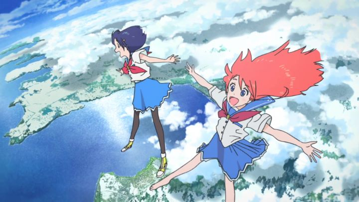

If I tell you that "Flip Flappers" is a 2016 "magical-girl" anime, you might first think of 2011's "Puella Magi Madoka Magica," a show that was not the first but was one of the most successful anime to deconstruct the "magical-girl" genre as being more sinister than what child friendly fare like "Sailor Moon" or "Pretty Cure" would have you believe. Many other shows would be influenced by it, and "Flip Flappers" is no exception. In fact, "Flip Flappers" liberally borrows from "Madoka Magica," "Sailor Moon," "Neon Genesis Evangelion," "Kill la Kill" and "FLCL," and several older fairy tales such as "Alice in Wonderland," "Snow White," "Little Red Riding Hood," and "Hansel and Gretel," be it in style or theme, as well as several other stories in other subtle ways. But it still feels distinct enough to stand on its own as a creative beacon of imagination.Initially setting itself up as a family-friendly magic show, it starts when ordinary and quiet school-girl Cocona is discovered by Papika, a wild child surfing on a hoverboard who works for a secret organization called "Flip Flap." Their goal is to travel to and research the hidden world of "Pure Illusion," an imaginary world crafted by the thoughts and desires of all living things, and wherein crystal shards of great importance must be collected. Cocona is initially nervious and distrusting of the group, and Papika is an overly-trusting and naive girl who likes sweet food and games. Despite their differences, or because of them, their friendship blossoms and they become ideal adventurers to set out into the world and back again. The story seems random at first, but in the final episodes comes together in a impressive manner, as if the creators actually had a plan all along from the start. However satisfying the story might be (or whatever broad jumps in logic it ignores to make its ending), the biggest draw is in the adventures to "Pure Illusion." The world changes in nearly every episode, with it coming a entirely distinct visual style (think crayons, colored pencil, markers, cutouts) and genre (horror, Western, science-fiction, etc.). It's incredibly diverse and entertaining enough to be enjoyable despite the seemingly random nature of the styles. This also gives great opportunity to make the show look good: few other anime shows on television look this colorful or vibrant or varied, making it one of the more visually impressive shows of its year both in design and animation, and only limited through its television-level production budget. And I didn't yet mention the well-animated action scenes with all manner of demonic monsters; If you do love animation, you will want to watch "Flip Flappers" for this alone. Its further impressive since its animation group, Studio 3Hz, is relatively new in the anime industry, but after "Flip Flappers" would go on to have some impressive shows in its catelog.Back to the story, while it is best categorized as an action-adventure with hints of comedy, there is also a strong romantic presense underneath. Since the show heavily leans on the relationship between two young girls, it comes close to homosexual allusions without outright admitting anything beyond friendship (a genre of anime called "yuri" exists to describe this type of show, which "Flip Flappers" nearly crosses the line with). Cocona and Papika will transform into powerful "magical girls" during fights, complete with a reusable transformation animation straight out of "Sailor Moon," but with the camera lingering a little too long on their crotch area as their clothes dissolve into a fairy-like dress. For some viewers, these types of style choices are more of a highlight than a hidderance, but its a shame, since I would have openly recommended this show to young girls and families if not for some of this adult material. Despite romantic themes or violent action, its story beats do feel a lot like a traditional Saturday-morning cartoon. I will also breifly mention the English dub provided by Sentai Filmworks: while it improves as the story goes along, I would wholeheartedly recommend the original Japanese dub over it. It's hard to make an anime that feels original, and even though "Flip Flappers" borrows heavily from other shows, it feels more original than almost anything from the past decade. It joyful and energetic attitude make it fun to watch through from start to end.
- "Ani" More reviews can be found at : https://2danicritic.github.io/ Previous review: review_FLCL Next review: review_From_Up_On_Poppy_Hill